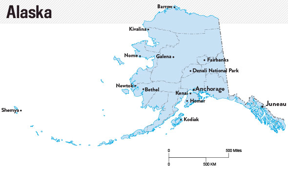
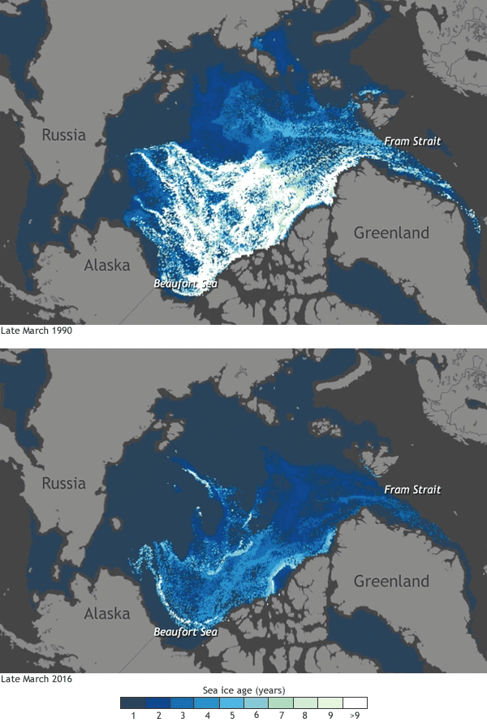
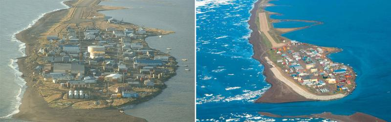

Average Monthly Arctic Sea Ice for the Month of February 1979-2018 Credit: National Snow and Ice Data Center
INTRODUCTION
Climate change is no longer an incipient threat. It is an ongoing global problem that threatens our very way of life. Increasing sea levels and temperatures, melting of the polar ice caps, and decreasing permafrost levels are all indicators of the true danger of climate change. Due to companies like BP America, Chevron, and Exxon Mobile Corporation millions of tons of greenhouse gases are emitted each year, and the Trump Administration's decision to pull out of the Paris Accord lessens the environmental regulations placed on these businesses. Additionally, the mining and supplying of coal--which is encouraged by the current administration--by Peabody energy only fuels these corporations and leads to even higher greenhouse gas emissions. Climate change is an inevitable, cyclical phenomenon, certainly, but the causes are purely exacerbated by these billion dollar companies. Subsequently, this corporate-hastened climate change is threatening the Indigenous way of life and culture. In yet another form of environmental racism facing Native Americans, corporate-fed climate change has led to the forceful relocation of several communities in the Alaskan Arctic Circle and jeopardized several others. The rapidly changing climate is causing severe flooding in the small village of Kivalina, Alaska and driving the Inupiaq people from their land. Climate change is a widespread problem of pandemic levels. It has no boundaries; no bias. Corporations must be held liable for their emissions and strict regulations must be reimplemented in order prevent inflated climate change. If the United States does not act soon, the people of Kivalina and other coastal, arctic villages face another wave of forceful relocation.
CLIMATE CHANGE
Background
According to the NASA website for climate change, 2012 set the record low for Arctic summer sea ice. Contrastingly, it did bounce back the following year. However, it has been steadily declining since the '80s. Warmer water is causing polar ice caps and glaciers to melt resulting in a larger volume of liquid water in the world's oceans. On top of that, due to the warmer sea temperatures, the ocean water is expanding. Rising sea levels pose a very dangerous threat to coastal cities. Erosion, aquifer contamination, flooding, and loss of habitat for wildlife are all consequences of increasing global temperatures and rising sea levels.
Congruently, the melting of Alaskan permafrost is another complication of global warming. Permafrost is any ground and/or soil that has been frozen for at least two years. In this soil are plants that died long ago. Commonly known, these plants absorb carbon dioxide throughout their lives and return oxygen. When these plants died, they were quickly frozen and therefore did not release all their stored carbon. According to New York Times, worldwide permafrost is thought to contain twice the amount of carbon already released into the atmosphere. Carbon is a greenhouse gas and catalytic to climate change. Therefore, the release of carbon causes more permafrost to eventually melt which, in turn, causes more carbon to be released; thus resulting in a vicious climate change cycle.


These maps show the age of Arctic sea ice. White areas indicate ice older than nine years. Top(March 1990). Bottom(March 2016).
Arctic Ice and Culture
Arctic sea ice is pertinent to Alaskan indigenous culture. Vera Metcalf, director of the Eskimo Walrus Commission, states, "We are dependent upon sea ice conditions. It's our life, our culture." She goes on to explain that in prior years sea ice would dominate the waters by December. However, lately, the Arctic ice seems to be arriving later each year. Moreover, the sea ice that does arrive is typically thinner than in past years. This thin ice causes troubles for hunters and doesn't allow for a long hunting season. Additionally, when the Yupiq and Inupiaq people are capable and successful in their hunt, sea ice is used to store the vast quantities of meats from walruses and whales. But the melting sea ice doesn't allow for this in the same manner that it used to.
Hunting and fishing has also changed due to the change in the Alaskan ecosystem. With warm water currents comes warm water fish. These fish can thrive in the colder waters and threaten local fish populations. Additionally, other invasive species can survive in the warmer conditions. When these new species come into an ecosystem unchallenged their population can increase exponentially. With no natural predators, new species can cause severe complications for those species that have adapted to the previous environment.
Hunting and the austere Alaskan ecosystem are not the only facets of indigenous culture affected by melting sea ice. The Guardian explains that the Yupiq people of Western Alaska are losing words in their vocabulary. Due to the cultural sea ice dependence, the Yupiqs have a plethora of words to describe the various stages of ice. However, due to the melting of this sea ice, words are vanishing from the local language because they have no use anymore. Words like "tagneghneg"--thick dark ice--are becoming obsolete because this stage of ice isn't seen anymore. Alaska Native culture is vanishing just as fast as the surrounding Arctic ice and unless measures are taken, these people will see their very way of life vanish as they are forcefully relocated; again in the name of U.S. industry.
KIVALINA
Melting sea ice, amongst other effects of climate change, has impacted coastal cities the most. Kivalina is a small Alaskan village of 400 people located roughly 50 miles north of the Arctic Circle. The small village is located on a barrier reef surrounded by two rivers and the Chukchi sea. In the past sea ice guarded this small village from incoming wind and waves from tropical storms. However, due to raising temperatures, sea ice is either much smaller or not present at all on the coast. Thus, Kivalina and its residents are much more prone to these storms. In fact, according to The Sierra Club Magazine, in 2004 a large tropical storm hit the northwest part of Alaska and destroyed twenty-one feet of coastline. Since then the coastline of Alaska has been continuously eroded by the incoming waves and storms.

Kivalina before(left) and after(right) after building
Kivalina is far from the first village or city to be severely affected by climate change. Even more, they are not the first town to seek compensation for the negligence of surrounding corporations that pour millions of tons of greenhouse gases into the atmosphere in order to simultaneously continue production while keeping costs at a minimum. In fact, that is exactly what Kivalina did. In an act much precedented, the 400 strong village of Kivalina is seeking roughly $400 million in compensation. The village and their lawyers are arguing that BP America, Chevron, Peabody Energy, Duke Energy, The Southern Company, Exxon Mobile Corporation, American Electric Power, and the Conoco Philips Company created a public nuisance. By this they mean contributed to the public nuisance of global warming by maliciously emitting millions of tons of greenhouse gases. Additionally, in a much more atypical judicial act, the city of Kivalina is suing the aforementioned companies for conspiracy. Claiming these companies have misled the public on the affects of greenhouse gases and climate change, Kivalina is seeking more than justice for their negligent corporate policy.
Ultimately, Kivalina lost its case. Initially the case was dismissed by a U.S. District Judge. The judge claimed that the villagers of Kivalina could not link their damages to the actions perpetuated by these oil giants. The village quickly followed this dismissal with their own appeal. However, after the appeals process a three judge appeal panel decisively ruled in favor of the original decision; Kivalina could not prove that these actions by the big corporations, even if they were made of their own volition, were the direct cause of the climate change affects impacting their village. The small village was left to fend for its own.
Finishing Plans
Add shishmaref?
Maybe captions on vids.
References.